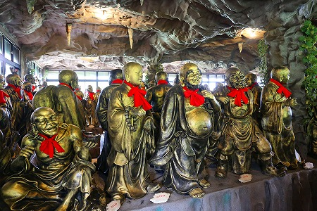

台湾屈指の珍寺、金剛宮に久々に訪問してみた。
前回訪問時に
「目から手の神様」と出会い、そのあまりにも衝撃的なルックスに参ってしまった私。
SNSのアイコンなどに使用させていただくほどの惚れっぷりなのでありますよ。
今回、いつも画像を使わせてもらっているお礼参りをしてこようというわけ。
場所は
台湾のほぼ最北端にある石門郷。
台北からMRTで淡水まで行き、そこからバス…は便がなかったのでタクシーで向かった。
二度目なので比較的楽に到着。
相変わらずファンキーな巨像が出迎えてくれる。
門を潜った先には二十四孝の銅像が並んでいる。
勿論、歯のない姑に乳を飲ませる、でお馴染みの唐夫人はチェックせざるを得まい…。

メインンの神様は
前回のレポートを参照していただくとして、何はともあれ
目から手様との謁見を果たさねば。
気合を入れて
お手製の目から手Tシャツ（
珍寺大道場ストアにて絶賛発売中！）を着て向かったのだが、お寺のスタッフさんがそのシャツを見た瞬間に大爆笑してたよ。
で、このお寺の最大のアイドル、目から手の神様である。
実はこの神様、六十太歳という60人の神様グループのメンバーで、
お寺にとっては数ある道教の神様のひとつであり、さほど重要な神様ではないのだ。
私が勝手に惚れこんでサイトで紹介したら、あちこちで人気になったらしく、この寺にやって来る日本人観光客（そもそも台湾人すらあまり来ない寺なのだが）のほとんどがこの神様を目指してくるのだとか。
日本で最初にここの神様を紹介した私としてはお寺さんに「スミマセン、私が日本で最初に紹介しちゃった者です」という気持ちを込めて目から手Tシャツを奉納してきたよ。
昨今ではお寺の方も日本人が来ると「アー、目カラ手コッチコッチ」と案内されているとか。
さらに日本語のパンフレットまで作っちゃったそうで。
何だか自分が種を撒いた案件だけど、ここまで広まると、逆にびっくりですね。
で、件の目から手様、こと
甲子太歳金辨大将軍に接見。
日当たりのよい窓際にあるため、痛みが激しい。
折角なので、目から手Tシャツを着た私と目から手様のツーショットをパチリ。
念願の目から手様に再会できて大変満足である。
さて、大満足したので帰るとすっか。
…おっと！そういえば！
前回訪問時に行けなかったところがあったのだ！
それが2階にある
地獄巡り。
前回は扉が閉まっていて悔し涙を流したのだが、今回はバッチリ2階に登れましたぜ！
というわけで魅惑の地獄巡り。
いきなりこんな感じで地獄が始まる。
うほほ〜い！
あの世の裁判が延々と続く中、合間合間に地獄の責め苦が並ぶ
典型的なチャイニーズヘルスタイル。
遠慮なくやられちゃってます。
鬼の造型が結構カワイイ。
一方、亡者の方はややコワめの造型。
この人は面白かったけど。
痛いんだか、嬉しいんだか、くすぐったいんだか良く判らない表情で内臓食われてます…。
臼ですり潰されてる。

何だか緊張感がないなあ。

後の赤鬼が頭上の巨石を引っ張っている。
責め苦が続いて廃人状態。
そんなこんなでシメは地獄の様子を忘れるスープを飲んで来世にGO！
これも中華系の地獄ではよく見かける。
…というわけで地獄はおしまい。
電動ギミックなどはなかったが、しっかりとした構成と造形で中々レベルの高い地獄世界だった。満足！
地獄の次には恐い犬が。
この石門郷は犬を祀る十八王公廟で有名な場所なのだ。
ちなみに近くの新十八王公廟には30ｍの巨大な犬の像もあるよ。
お次はユニークな神様が両脇にずらりと並ぶ神様ロード。

それにしても道教の神様って面白いよなあ。
その場その場で思いついちゃった感じのフリースタイルなルックスの神様が多くて、見ていてウキウキする。
この神様とか子供食べちゃってますもん。
しかも乗ってる動物の顔が邪悪すぎるよ。
コレ子供じゃなくて邪鬼を食べてるらしいのだが、食べてるというより水分をチューチューしてる感じだよね。
クーリッシュ食べてるときってこんな顔してるよね。
で、寝釈迦さんを過ぎると…
前回見落としていた一番奥の部屋。
そこに並んでいたのは…
むむむ…。何か変だ…。
おお、京都の方相氏みたいに目が4つあるのか！
若干乱視気味の私、最初は自分の目がおかしいのかと思ったら、おかしいのは神様の方の目だったのか…。
まだまだ先は続く。

ここも前回入れなかった羅漢像モッシュ状態の間。

凄い勢いでブロンズの羅漢さんが林立している。
あまりの数に少し食傷気味になっちゃいました。
道教仏教バラモン教などが入り混じった不思議な寺。
しかも地獄あり、羅漢あり、巨像あり訳の分からない神様もたくさんいる、本当にバラエティに富んだ寺だ。
つまり最高だ！ということだよ。
次ラスト！